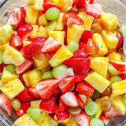
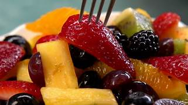
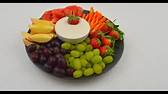

Perfect Summer Fruits Salad
This viibrant mix combines pineapple, kiwi, bananas, Oranges, grapes, and Berries in a sweet citrusy sauce.


Fruit Salad with Honey-Lime Dressing
A delightful combination of colorful fruit and berries, enhance by a tangy honey-ime dressing.


Fruits Salad with Yogurt
A quick and testy fruit salad mixing canned fuit cocktail with fresh fruit and Yogurt.

Fruit Dip
A simple fruit dip made with mascarpone, heavy cream, vanilla, and powdered sugar.